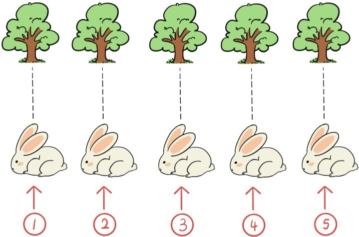

一年级小学生在人生的第一节数学课中，学的就是数数和最简单的数字1，2，3，…现代人对这些最简单的数学知识是如此地熟悉，认为这些知识是如此地简单，以至于大家都以为这些数学知识是自古以来就有的。
其实，套用罗素的一句话，在远古时代，人类是经历了几百万年的漫长时间才渐渐意识到5只兔子的5和5棵树的5实际上是一回事，才在这类经验的基础上形成了数的概念。今天，教孩子数数，也是要让他们意识到5只兔子的5，和5棵树的5是一回事，让他们可以从5只兔子，5棵树，5个苹果，5个人……中抽象出5这个数字概念。
这里，我们会碰到一个非常自然的问题，也是学数数的小孩子有可能会问的一个问题：
问题1：5只兔子的5，和5棵树的5为什么是一回事？
很多人可能会认为，5只兔子的5，和5棵树的5是一回事，这没有为什么，是天经地义的，自然而然的，理所当然的。
其实，这是一个非常非常重要，但又极容易被人忽视的数学问题。5只兔子的5，和5棵树的5之所以是一回事，是因为，5只兔子和5棵树之间可以建立起一一对应的关系（如下图所示）。

实际上，数数本身就是建立一一对应关系。当我们数5只兔子的时候，就在我们的大脑中给每一只兔子配上一个数字，这正是让这5只兔子和1，2，3，4，5这5个数字之间建立起一一对应的关系。
我们常常会问，什么是“数”，“数”的本质是什么？对于1，2，3，4…这些自然数而言，其本质就是：一一对应关系。把数的本质归结为一一对应关系，这种数学思想，在很多人看来，好像也很简单，其实未必。
哪怕是在现实中，巧妙地运用这种数学思想，也会有神奇的效果。在这里我想起了“乾隆数塔”的故事。乾隆游览少林寺塔林的时候，想让周围人数数塔林中有多少个塔，但几百个塔层层叠嶂，根本没法数。于是乾隆派几百个士兵进去，让每个士兵抱住一个塔，出来后数抱塔士兵的数量。乾隆数塔的方法就是让士兵与塔建立起一一对应关系，用一一对应的原理来数塔，绝不会出错。
问题2：请想象一下，在现实生活中哪些地方有可能会用到一一对应的原理？